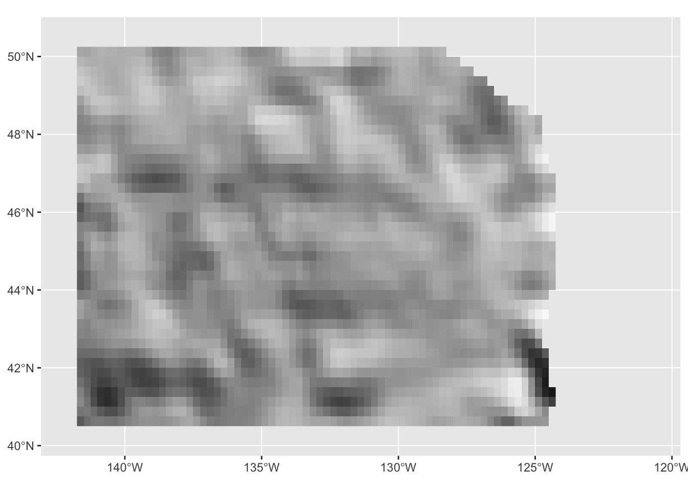
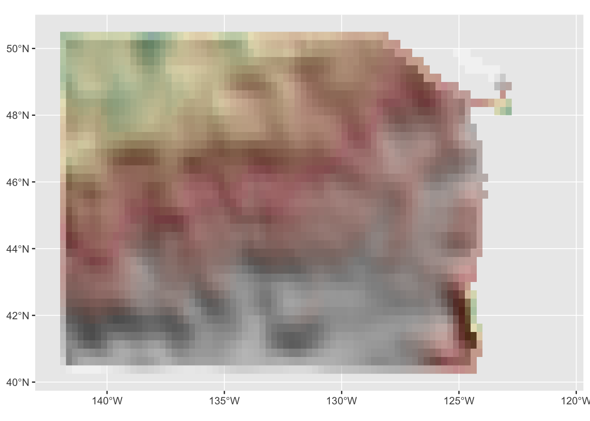
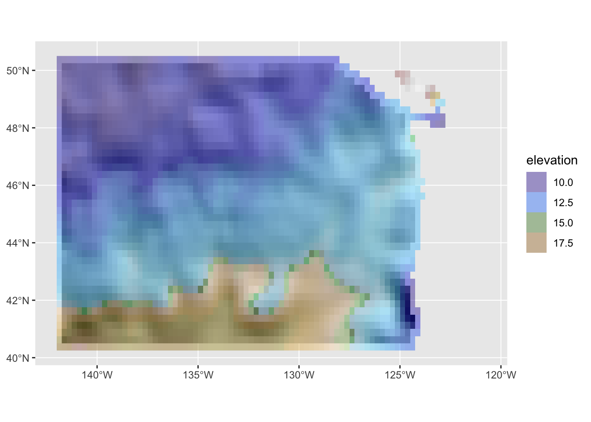
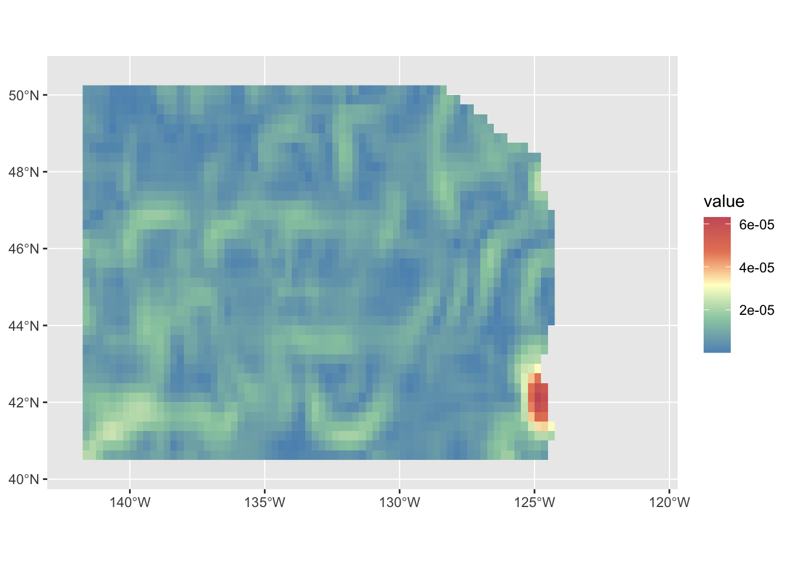
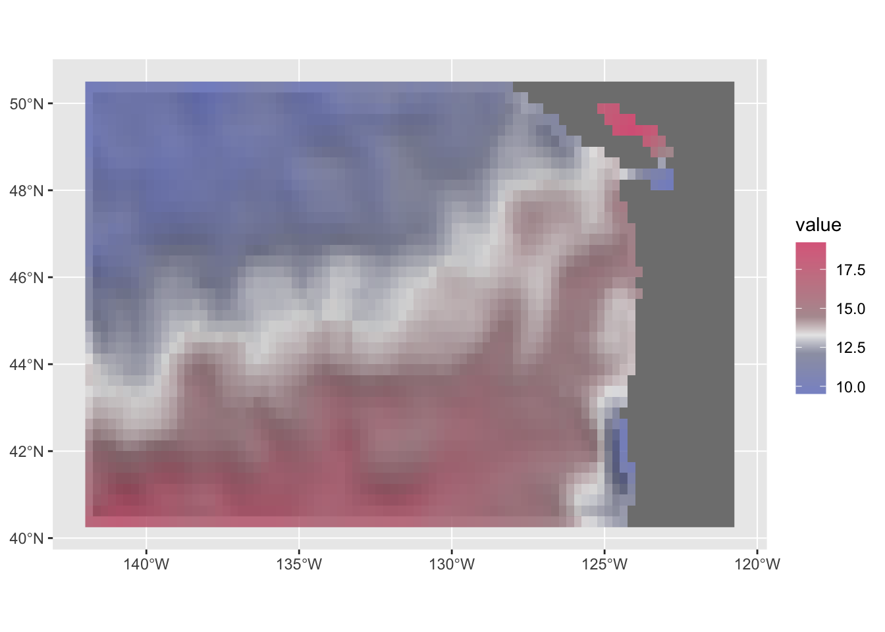
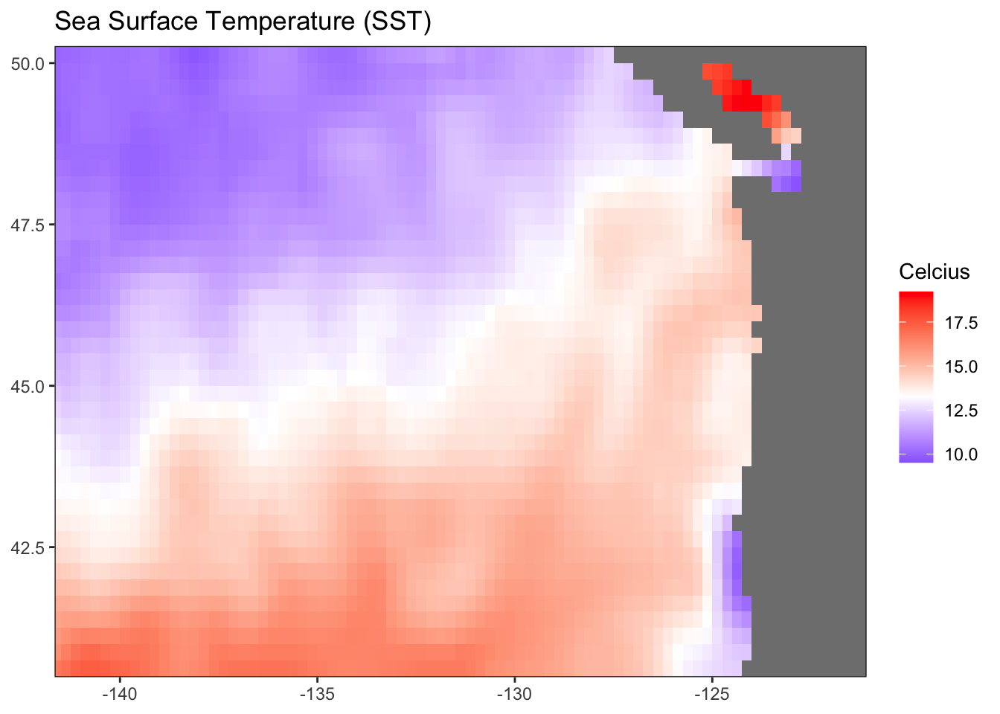
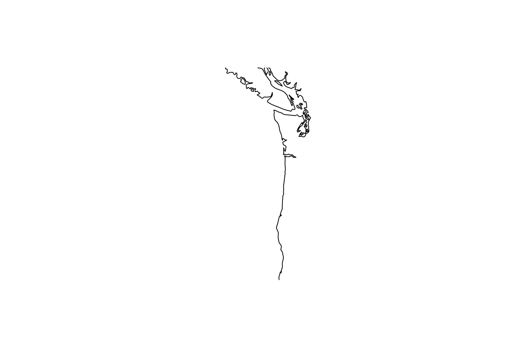
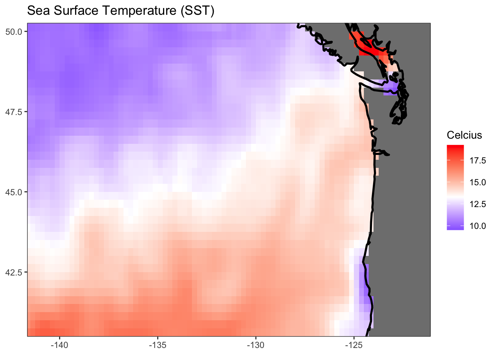

require(devtools)
devtools::install_github("ropensci/rerddap")
devtools::install_github("rmendels/rerddapXtracto") Day 7 Raster
Libraries
library(tidyverse)── Attaching packages ─────────────────────────────────────── tidyverse 1.3.2 ──
✔ ggplot2 3.4.0 ✔ purrr 0.3.5
✔ tibble 3.1.8 ✔ dplyr 1.0.10
✔ tidyr 1.2.1 ✔ stringr 1.4.1
✔ readr 2.1.3 ✔ forcats 0.5.2
── Conflicts ────────────────────────────────────────── tidyverse_conflicts() ──
✖ dplyr::filter() masks stats::filter()
✖ dplyr::lag() masks stats::lag()library(tidyterra)
Attaching package: 'tidyterra'
The following object is masked from 'package:stats':
filterDownload sea surface temperature data
I will download the optimal interpolation sea surface temperature from CoastWatch. The bounding box is off the coast of Washington, USA.
filePath <- here::here("content", "data", "day7_sst_raster.RData")
lats <- c(40.375, 50.375)
lons <- c(-141.875, -120.875)
if (!file.exists(filePath)) {
df_info <- rerddap::info("ncdcOisst21Agg_LonPM180")
df <- rerddap::griddap("ncdcOisst21Agg_LonPM180", latitude = lats, longitude = lons, time = c("2021-06-19", "2021-06-19"), fields = "sst")$data
save(df, file=filePath)
}else{
load(filePath)
}Turn this into a raster. Need to tell raster that this is lat/long data.
df2 <- data.frame(x=df$lon, y=df$lat, z=df$sst)
ras <- raster::rasterFromXYZ(df2, crs = "+proj=longlat")library(terra)terra 1.6.17
Attaching package: 'terra'The following object is masked from 'package:tidyr':
extractr <- terra::rast(ras)
names(r) <- "alt"
setMinMax(r)
slope <- terra::terrain(r, "slope", unit = "radians")
aspect <- terra::terrain(r, "aspect", unit = "radians")
hill <- terra::shade(slope, aspect, 10, 200)
names(hill) <- "shades"library(scales)
Attaching package: 'scales'The following object is masked from 'package:terra':
rescaleThe following object is masked from 'package:purrr':
discardThe following object is masked from 'package:readr':
col_factor# Hillshading, but we need a palette
pal_greys <- hcl.colors(1000, "Grays")
index <- hill %>%
mutate(index_col = rescale(shades, to = c(1, length(pal_greys)))) %>%
mutate(index_col = round(index_col)) %>%
pull(index_col)
# Get cols
vector_cols <- pal_greys[index]
hill_plot <- ggplot() +
geom_spatraster(
data = hill, fill = vector_cols, maxcell = Inf,
alpha = 1
)
hill_plot
r_limits <- minmax(r) %>% as.vector()
# Rounded to lower and upper 500
#r_limits <- c(floor(r_limits[1] / 500), ceiling(r_limits[2] / 500)) * 500
base_plot <- hill_plot +
geom_spatraster(data = r, maxcell = Inf) +
scale_fill_hypso_tint_c(
limits = r_limits,
palette = "dem_poster",
alpha = 0.4,
labels = label_comma(),
# For the legend I use custom breaks
breaks = seq(-300, 1000, 100)
)
base_plot
library(tidyterra)
hill_plot +
geom_spatraster(data=r, maxcell = Inf) +
scale_fill_hypso_tint_c(limits = as.vector(minmax(r)),
palette = "etopo1",
alpha =0.4,
direction = 1,
labels = scales::label_comma()) +
guides(fill=guide_legend(title = "elevation", reverse = FALSE))
ggplot() +
geom_spatraster(data=slope, maxcell = Inf) +
scale_fill_whitebox_c(palette = "muted", alpha = 0.9, direction = 1)
geom_spatraster(data=r, maxcell = Inf) +
scale_fill_whitebox_c(palette = "muted", alpha = 0.9, direction = 1)NULLlibrary(colorspace)
Attaching package: 'colorspace'The following object is masked from 'package:terra':
RGBhill_plot +
geom_spatraster(data=r, maxcell = Inf) +
scale_fill_continuous_diverging(
palette = "Blue-Red-2", p2 = .1, alpha=.8, mid=mean(df$sst, na.rm = TRUE))
Plot the raster
library(raster)Loading required package: sp
Attaching package: 'raster'The following object is masked from 'package:tidyterra':
selectThe following object is masked from 'package:dplyr':
selectlibrary(ggplot2)
gg <- ggplot(df) +
geom_raster(aes(longitude, latitude, fill = sst)) +
scale_fill_gradient2(midpoint = mean(df$sst, na.rm = TRUE),
low = "blue",
mid = "white",
high = "red") +
labs(x = NULL,
y = NULL,
fill = "Celcius",
title = "Sea Surface Temperature (SST)") +
theme_bw() +
scale_x_continuous(limits = lons, expand = c(-0.01, -0.01)) +
scale_y_continuous(limits = lats, expand = c(-0.01, -0.01))
ggWarning: Removed 248 rows containing missing values (`geom_raster()`).
Add a coastline
coast <- rnaturalearth::ne_coastline(scale = 50, returnclass = "sp")
wa_or_coast <- raster::crop(coast, raster::extent(lons[1], lons[2], lats[1], lats[2]))
plot(wa_or_coast)
The way that ggplot2 works is to run fortify() on the SpatialLines object to create a data frame. Then we use geom_path() to plot that. But if you look at the coast, you see lots of islands. We need to add grouping to tell geom_path() that there are these groups of paths in the data frame.
gg +
geom_path(data=wa_or_coast, aes(x=long,y=lat, grouping=id), size=1, na.rm=TRUE)Warning: Using `size` aesthetic for lines was deprecated in ggplot2 3.4.0.
ℹ Please use `linewidth` instead.Warning in geom_path(data = wa_or_coast, aes(x = long, y = lat, grouping =
id), : Ignoring unknown aesthetics: groupingWarning: Removed 248 rows containing missing values (`geom_raster()`).